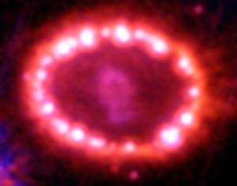

Past ExperimentsCurrent ExperimentsFuture Experiments |
An electron as it appears to Super-Kamiokande. Courtesy of http://www.ps.uci.edu/~tomba |
|
|
Gravity radiating from colliding black holes. Courtesy of http://www.sr.bham.ac.uk/instrument/ligo.html |
Laser Interferometers (Current and Future)Resonant Bar Detectors |
|
|  |
|
|